First, I hooked up the IMU to the Artemis board via Qwic connector and used the wire code to scan the i2c bus. I found the sensor at 0x69 as expected.
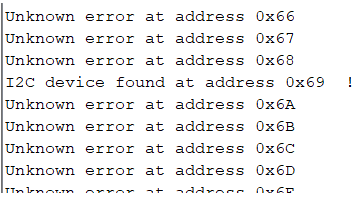
Playing around with the IMU on my desk, I found that the acceleration data generally hovered around (0, 0, 1000) when laying flat, which is expected for 0 acceleration in the x and y directions and 1g of acceleration in the z direction due to gravity. The magnetometer and gyroscope data hovered around zero as well, again expected as the IMU was not moving.
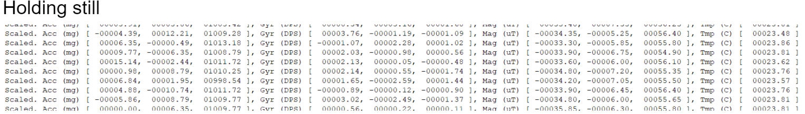
When I started waving the IMU around, I got more erratic data reads from all sensors on the 9 DOF IMU. Acceleration data in particular was much higher.
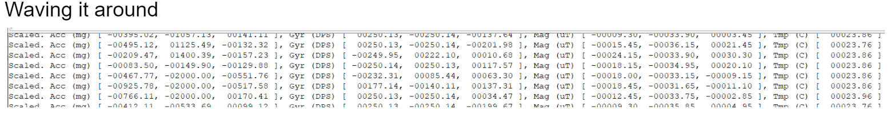
Testing the Accelerometer
First, I read out just the raw data from the accelerometer and plotted it using the Arduino Serial Plotter. Holding it at {-90, 0, 90}, these were the results
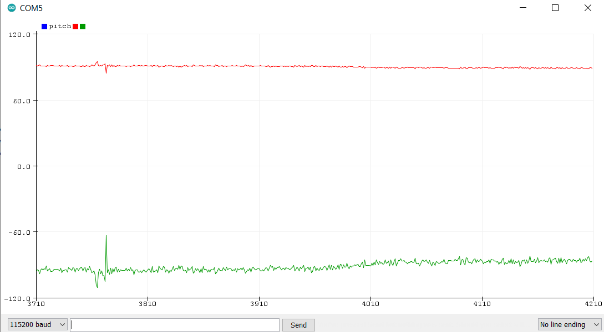
I saw that there was a lot of noise on it, so I did some analysis of the accelerometer X data while lying flat on the table. I found an average value of .205 with a stdev of .4, which I did not find unreasonbly uncalibrated for the sensor. An average value of .2 could correspond with my table not being exactly flat.
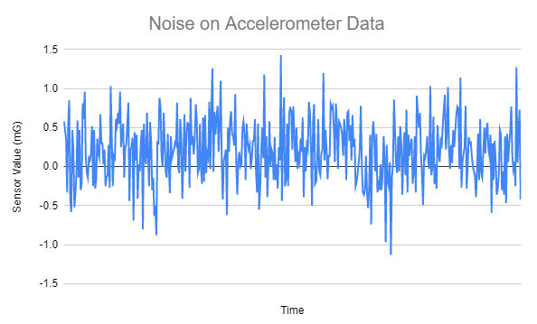
I next tried tapping at the table while the IMU was sitting still. I found large spikes when this happened.
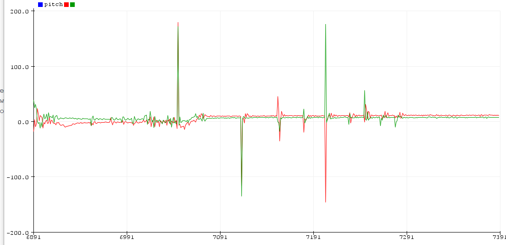
So I plotted the FFT in python to see the frequencies of the disturbances.
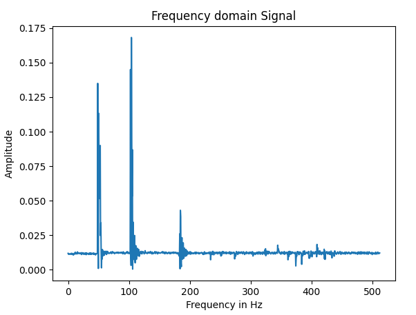
The highest frequency response I observed was at 200 Hz. Using the equations from class to calculate alpha, I set RC to 200 Hz and T to 1/(30ms) (the delay time) to achieve an alpha of .14. I tested this functionality by setting up a rolling filter and seeing the response. I tilted the IMU by 90 degrees and observed the change, which was very smooth after the filter was implemented, and not spiky like before.
I compared the filtered accelerometer data to the gyro data to see how they differ with roll and pitch.
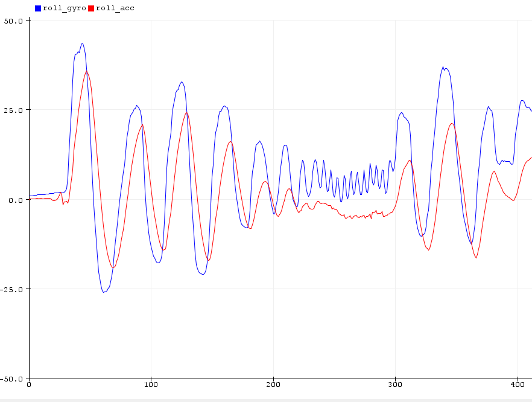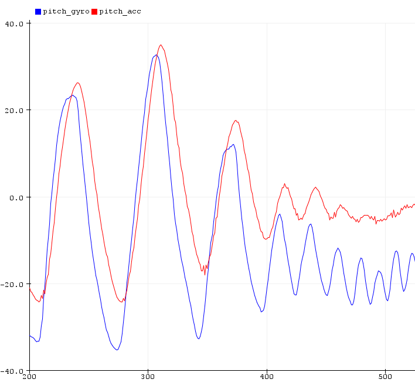
As expected, the gyro data drifts over time but has very smooth and apparently accurate readings relative to previous readings (the drift makes it overall inaccurate). The gyro was also faster to respond due to the filtering happening on the accelerometer.
Changing the time delay between calls didn't have a huge effect on the accuracy of the reading, but did have a huge effect on how quickly the gyro drifted from center. It was much faster to drift with lower time step, and vice versa. Left image is the slow reading, right is fast
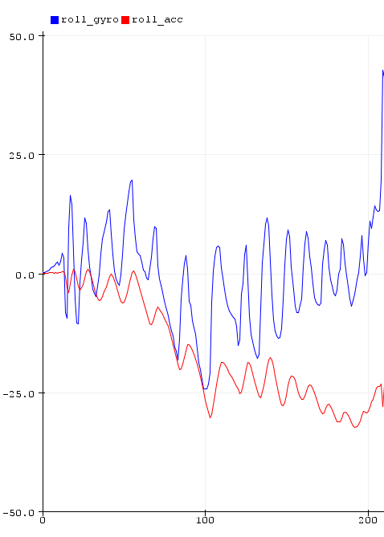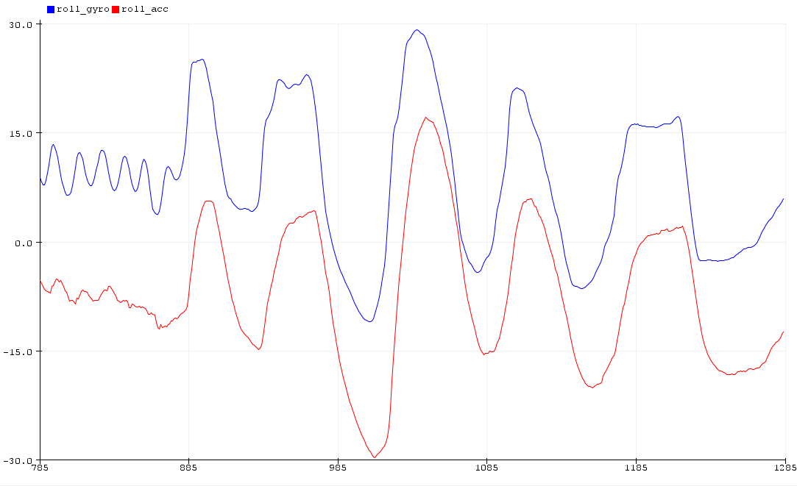
Next, I implemented a complimentary filter to fuse the readings from the accelerometer and the gyro using the rolling filter suggested in class to get a more accurate and smooth reading. The filter helped negate the drift from the gyro, while also responding quickly and without extreme sensitivity from the accelerometer. I chose a higher value of beta than used in class to trust the accelerometer slightly more after some trial and error.
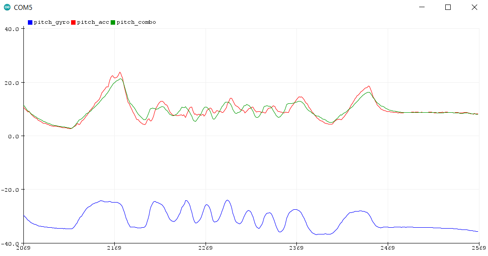
Finally, I took readings from the magnetometer to acquire yaw. I found that the magnetometer was very innacurate and did not respond well to rotation, only reporting around 30 degrees regardless of which angles I was reading.
I determined that the magnetometer would be even worse once mounted to the robot due to noise from the DC motors, and determined that I could instead determine yaw from the gyroscope as Kirstin suggested on CampusWire. The gyro reported a good relative yaw, still drifting but able to respond quickly and robustly to changes in yaw.
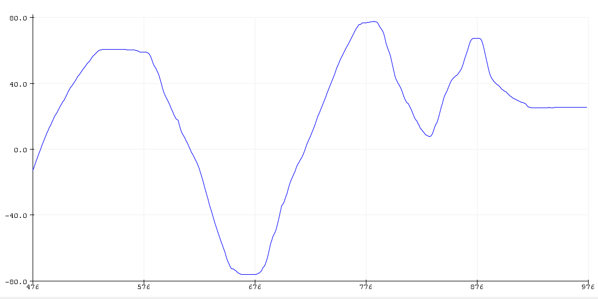
PID Control
First, I tested to see how the robot could reliably spin on its own axis but ramping up and ramping down the speed as the wheels spun in opposite directions. I stopped the ramp up at 200 motor speed, because I found the robot was quickly spinning at this time and I didn't need to go higher for this data. The robot wouldn't start turning at all before around 150, and wouldn't start consistently spinning with both wheels until 190. The ramp down was much smoother than the ramp up, likely due to the different between static and rolling friction constants on the table. There was no difference between the two different wheels in this case, and they both stopped spinning around 154.
Next, I tested to see how slowly I could consistently spin the robot by simply feeding the motors a constant value. I found that I was able to do this around 180. The robot is a little jerky and sometimes requires a push to get started and get over that static friction, but these are just things to be improved with PID control.
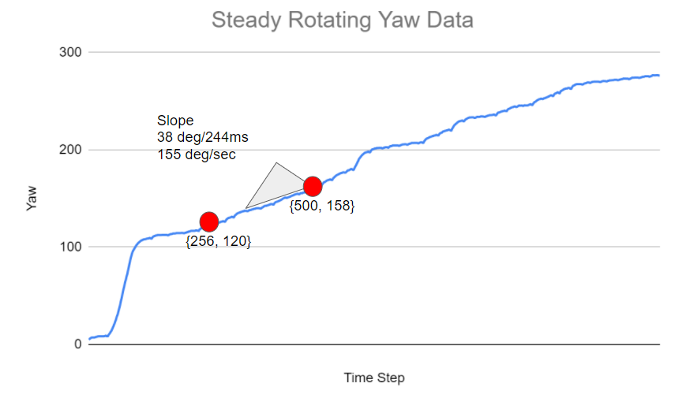
As seen in the above figure, the slowest I could rotate was around 155 degrees per second. Given the TOF has a minimum reading time of 20ms, the robot would rotate 3 degrees each reading. If the robot was initially .5m from the wall, after a 3 degree rotation it would be .5m/cos(3) = .500686 meters away from the wall for a delta of .686 mm. However, if the robot started at a 45 degree angle, the initial TOF reading would be .7071m, and the reading after an extra 3 degrees of rotation would be .7472m for a delta of 40mm.
Next I got to the real PID tuning. This was very difficult. Most of the time the scans were pretty bad. I used the built in Arduino PID tuner with tunable coefficients.
I started with just proportional control (P) and got a rather jerky but slightly slower/smoother scan than I was getting initially
This was with setting Kp to 2 and all other constants to zero, with an average spin speed of around 100 deg/sec. This was with a fresh battery, and is the best I've been able to do so far. Adding Kd and Ki constants has only made things worse as far as I can tell. When incorportating those, the robot just jerks around and the PID controller is trying to ramp up too hard. The problem is that values 0-180 won't turn at all, so it quickly ramps up to 255, which is too high, then tries to adjust by going back below 180.
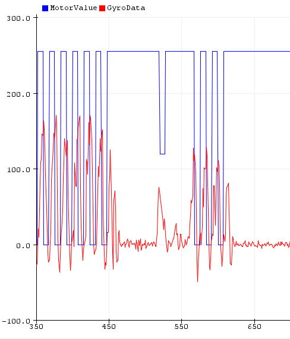
Next I tried dropping the delay value between reads/writes. I don't know how feasible this will be when mapping, but perhaps for the initial just scanning while it isn't driving the delay can be lower. I did this with a Kp of 3 and a Ki of .1 which appeared to help a little bit. I also set max and min values that the controller could set the motor to, because it was jumping from 0-255 too much. I limited it between 50 and 200.
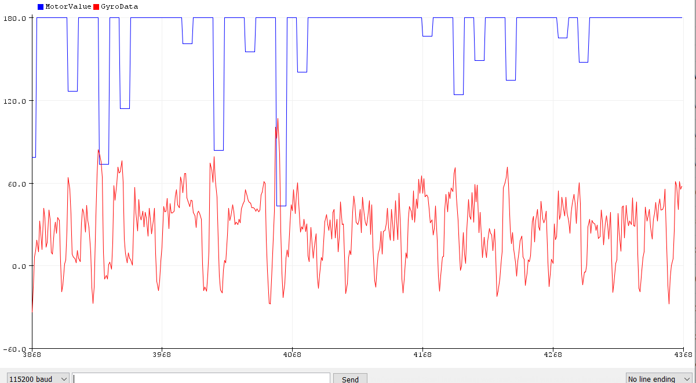
Simulation
To test the simulation, I downloaded lab6 code and ran the simulator. I opened the Jupyter notebook and started playing around with the odometer vs ground truth data
This would show to a fairly high number of sigfigs the position of the robot, which I tested by dragging it around with my mouse and rerunning. After satisying myself with that, I opened up the plotter ("B, S"). I simply pass the x and y values of the get_pose() functions to the plotter to see how close they are.
I chose a delay time of .03 to match the 30ms in the Arduino code to make this sim more useful to consider for the lab.
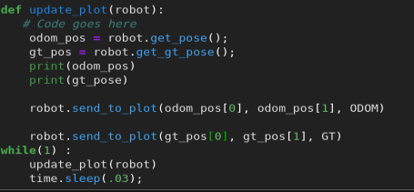
I first ran the code while the robot was stationary for as long as it took to start typing this section up, and it drifted quite a bit. This was approximately 3-4 minutes, plotting every .03 seconds, so about 7k points. It gets pretty dense.
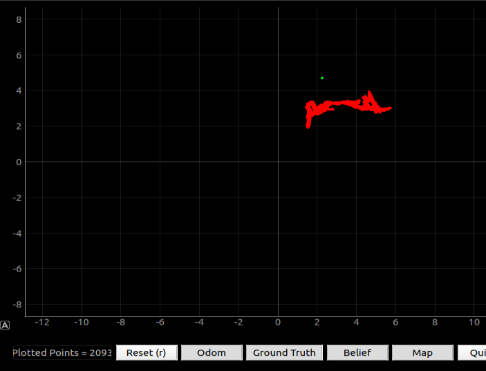
Running the sim at several different speeds produced differences in the accuracy of the odometry vs the ground truth. Faster was definitely better, though I am unsure why. I guess that is a good sign for my fast robot! It is possible that the innacuracy has a threshhold, and is less noticeable for larger changes (ie is not proportional to the size of the change in data) Below are three example speeds at .05, .5, and 1 linear speed, respectively. Oddly enough, the odometry was mirrored to the ground truth data, as shown below.
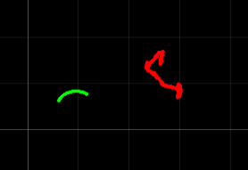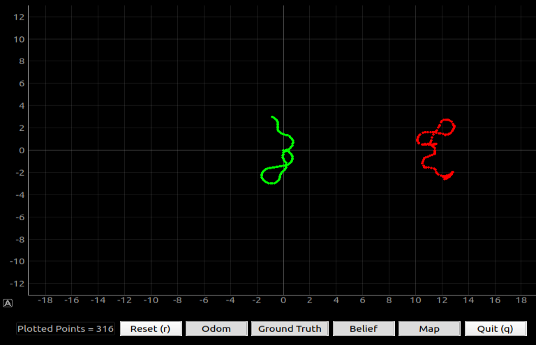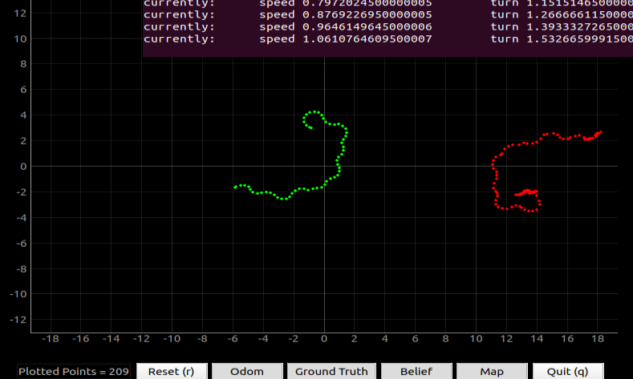
I ended up changing the delay time to .3 seconds (ten times slower) because the jupyter notebook was getting kind of laggy. Here are some example speeds and corresponding odometry and ground truth data. Again, the data is oddly mirrored, which could be fixed in code.